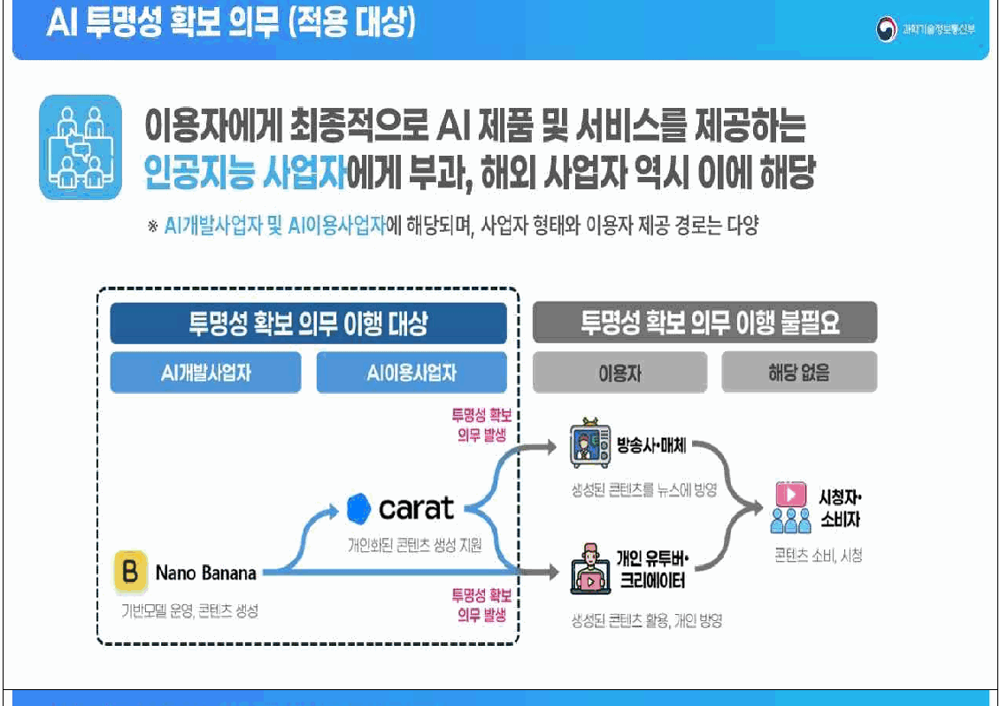
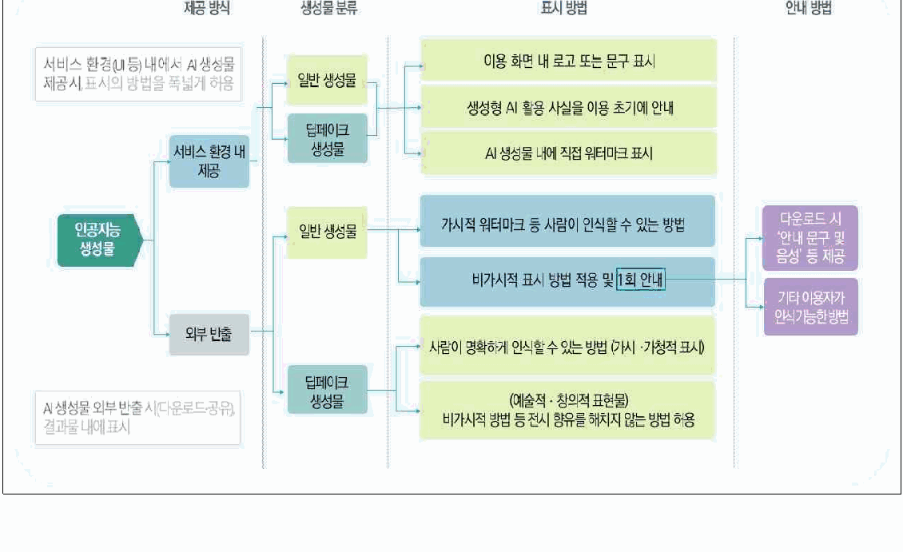
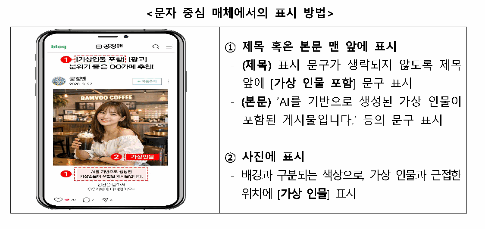
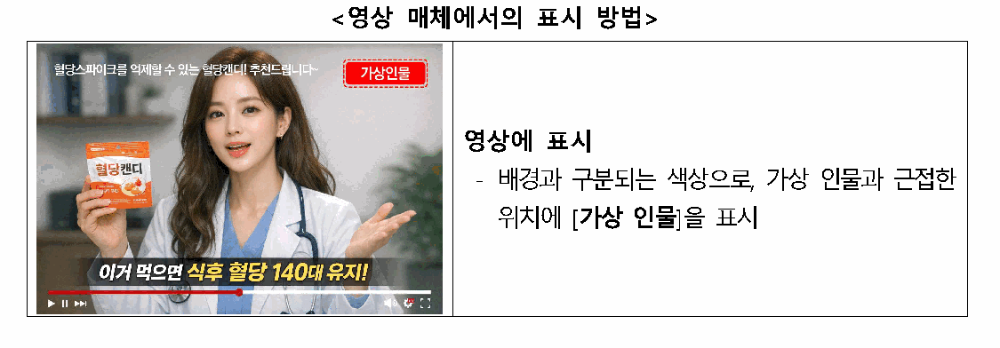

AI로 만든 사진, SNS에 표시해야 하나요 — 2026 AI 기본법 정리
AI 사진에 'AI로 만들었다'고 표시할 의무는 원칙적으로 여러분이 아니라 AI 서비스 쪽에 있어요. 2026년 7월 25일 기준, 인공지능 기본법과 시행령, 관련 지침이 근거예요.
이 의무를 인공지능 투명성 확보 의무라고 불러요. AI로 만든 결과물임을 밝히도록 정한 규정이에요. 다만 광고·협찬으로 가상 인물을 쓴 게시물은 얘기가 달라져요. 아래에서 따로 다룰게요.

이행 대상은 AI개발사업자·AI이용사업자예요. 개인 크리에이터는 '이용자'예요.
이미지 출처: 과학기술정보통신부 보도자료(2026.1.21.) 참고자료
표시 의무, 누구에게 있나요
인공지능 투명성 확보 의무의 대상은 AI 서비스를 제공하는 사업자예요. 근거는 「인공지능 발전과 신뢰 기반 조성 등에 관한 기본법」이에요. 법률 제20676호로 제정돼 2026년 1월 22일 시행됐고, 지금은 제21311호예요. 시행령은 대통령령 제36053호로 같은 날 시행됐고, 지금은 제36506호예요.
법 제31조는 4개 항이고, 의무를 정한 1~3항은 주체가 모두 '인공지능사업자'예요. 2항은 결과물이 AI로 생성됐다는 사실을 표시하도록 정해요. 3항은 딥페이크성 생성물을 이용자가 명확히 인식할 수 있는 방식으로 고지·표시하도록 해요. 예술·창의적 표현물은 완화된 방식을 쓸 수 있어요.
법 제2조는 인공지능사업자를 법인·단체·개인·국가기관등 인공지능산업 관련 사업자로 정의해요. 이용자는 반대로 제품·서비스를 제공받는 자예요. 국내 이용자를 대상으로 하는 해외 사업자도 포함돼요.
과기정통부가 2026년 1월 21일 배포한 보도자료 기준이에요. 이행 주체를 'AI 제품·서비스를 직접 제공하는 인공지능사업자'로 규정했다고 밝혀요. 같은 보도자료는 이렇게 밝혀요. "인공지능 기술이나 서비스를 단순히 업무나 창작의 '도구'로 활용하는 이용자는 의무 대상에 해당하지 않는다."
보도자료는 영화 제작사도 '이용자'라 의무 대상이 아니라고 예시를 들어요. 개인 SNS 게시는 이보다 더 도구 활용에 가까워요. 법 조문에 'SNS 게시자'가 따로 적혀 있진 않아요. 정의 조항과 보도자료 기준으로는 이용자 쪽이에요.
협찬을 받는지 여부가 기준은 아니에요. AI 서비스를 제공하는 쪽인지, 제공받는 쪽인지로 갈려요.
계도기간은 AI 서비스 쪽 이야기예요
AI 서비스 사업자가 표시를 빠뜨려도 사실조사·과태료 부과가 유예돼 곧바로 처벌받지 않아요.
과기정통부 보도자료는 1년 이상 계도기간 방침에 따라 투명성 조항도 사실조사·과태료 부과가 유예된다고 밝혀요. 계도기간 종료 시점은 확인된 공식 발표가 없어요. 최소 1년 이상이라는 방침만 확인돼요.
| 조문 | 어떻게 되나요 |
|---|---|
| 제43조(과태료) | 최대 3천만원까지 매길 수 있어요(제31조 중 1항만 해당) |
| 제40조 | 2항·3항 위반은 사실조사·시정명령이 먼저고, 안 고치면 그때 과태료예요 |
계도기간이 끝난 뒤 사업자에게 적용되는 경로예요.
AI 서비스는 이미 뭘 붙이고 있나요
여러분이 많이 쓰는 생성형 AI에는 이미 표시 기술이 들어가 있어요. 시행령 제23조제2항은 사람이 인식하는 방법과 기계가 판독하는 방법, 두 갈래로 표시 방식을 정해요. 기계 판독이면 안내 문구·음성도 1회 이상 함께 제공해요.
| 상황 | 표시 방법 |
|---|---|
| 서비스 화면 안에서만 보일 때 | UI·로고 표출 등 유연하게 적용 |
| 외부로 내보낼 때(일반 생성물) | 가시적 워터마크, 또는 문구·음성 안내 후 메타데이터 적용 |
| 외부로 내보낼 때(딥페이크성 생성물) | 이미지=가시적 워터마크, 영상=전체 재생구간 표시, 음성=재생 초기 안내 음성 |
표시 방법 표 출처: 과학기술정보통신부 보도자료(2026.1.21.) 참고자료

서비스 환경 내 제공과 외부 반출, 일반 생성물과 딥페이크 생성물별로 표시 방법이 갈려요.
이미지 출처: 과학기술정보통신부 보도자료(2026.1.21.) 참고자료
OpenAI 도움말에 따르면 ChatGPT·Codex·API로 만든 이미지엔 C2PA 메타데이터가 들어가요. SynthID 워터마크도 함께 들어가요. C2PA는 콘텐츠 자격 증명(Content Credentials)이라는 표시 규격이에요. openai.com/verify에서 확인돼요. 메타데이터가 지워져도 워터마크로 감지될 수 있어요. 다만 편집 정도에 따라 안 잡히기도 해요.
구글 딥마인드는 SynthID를 미디어에 신호를 직접 삽입하는 보이지 않는 워터마킹 기술이라고 설명해요. 한국 시행령 때문이라기보다, 각 회사가 자체적으로 적용해 온 기술이에요.
광고·협찬이면 얘기가 달라져요
광고·협찬 게시물이라면, 여기서부터는 여러분이 표시하는 쪽이에요. AI로 만든 가상 인물이 등장해 상품·서비스를 추천·보증하면 따로 표시해야 해요.
공정거래위원회는 「추천·보증 등에 관한 표시·광고 심사지침」을 개정해 2026년 6월 1일 시행했어요. 보도자료는 2026년 5월 29일 배포됐어요. 개정 골자는 AI로 생성한 가상 인물을 새로운 추천·보증 주체로 추가한 거예요. 적절한 표시 문구와 표시 방법도 함께 안내했어요.
| 매체 | 표시 위치·방법 |
|---|---|
| 블로그·인터넷카페 등 문자 중심 매체 | 게시물 제목 또는 첫 부분에 "가상 인물 포함" 등 |
| 사진·동영상 등 영상 매체 | 가상 인물 등장 구간에 근접한 위치, 배경과 구분되는 색상으로 "가상 인물" 등 |
문자 매체용 예시 문구는 이래요. "AI를 기반으로 생성된 가상 인물이 포함된 게시물입니다." 또는 짧게 "가상 인물 포함"으로 표시할 수 있어요.

블로그 게시물에 [가상 인물 포함]을 표시한 예시 화면이에요.
이미지 출처: 공정거래위원회 보도자료(2026.5.29.)
표시 문구는 매체가 뭐든 놓치기 어려운 자리에 있어야 해요.

영상 속 가상 인물 등장 구간에 [가상 인물]을 표시한 예시 화면이에요.
이미지 출처: 공정거래위원회 보도자료(2026.5.29.)
가상 인물임을 표시해도 추천·보증 내용이 실제 경험처럼 표현됐는데 사실과 안 맞으면 부당한 표시·광고가 될 수 있어요. 공정위는 표시가 빠진 광고를 살펴보고 고치도록 안내할 계획이에요.
여기서 다루는 건 가상 인물이 추천·보증하는 광고성 게시물이에요. 협찬 없는 일상 게시물은 대상이 아니에요.
플랫폼은 어떻게 처리하나요
법·지침과 별개로 각 플랫폼도 자체 AI 라벨 기능을 운영해요.
유튜브는 아래 중 하나에 해당하면 공개하도록 안내해요.
- 실제 인물이 하지 않은 말·행동처럼 보이게 만들었을 때
- 실제 사건·장소를 바꿨을 때
- 없던 장면을 진짜처럼 만들었을 때
절차는 이래요.
- YouTube 스튜디오에서 영상을 업로드해요.
- 업로드 중 '속성' 섹션에서 'AI 사용' 항목의 '예'를 선택해요.
- 시청자에게는 동영상 플레이어나 설명란에 표시돼요.
공개를 계속 거부하면 유튜브가 직접 라벨을 붙이거나, 콘텐츠 삭제·파트너 프로그램 참여 정지 같은 불이익이 있을 수 있어요.
네이버 블로그는 뉴스1 보도 기준으로 'AI 활용' 표시 기능을 지원해요.
- 블로그·카페·네이버TV·클립에 적용돼요.
- 자율 표기라 강제력은 없어요.
틱톡은 다른 플랫폼에서 만든 AI 콘텐츠에도 자동으로 'AI 생성' 라벨을 붙여요.
인스타그램·페이스북을 운영하는 Meta는 업계 표준 표시가 감지되면 AI 라벨을 자동으로 붙여요. 게시물 작성 화면에서 AI 라벨을 직접 지정할 수도 있는데, 정확한 메뉴 위치는 앱에서 직접 확인해 보세요.
| 플랫폼 | 표시 방식 | 이용자가 할 일 |
|---|---|---|
| 유튜브 | 업로드 시 'AI 사용' 항목 직접 선택 | 직접 공개 설정 |
| 네이버 블로그 | 사용자가 자율로 'AI 활용' 표기 | 자율(강제력 없음) |
| 틱톡 | C2PA 감지 시 자동 라벨 | 사실적 AI 콘텐츠는 직접 라벨 |
| 인스타그램·페이스북 | 업계 표준 표시 감지 시 자동 라벨 | 자동 부착(별도 조작 없음) |
유튜브·틱톡은 이용자가 직접 켜야 할 때가 있고, 나머지는 조건이 맞으면 자동으로 붙어요.
자주 묻는 질문
Q. 워터마크를 지우면 불법인가요?
저작권법 제104조의3은 권리관리정보를 지우거나 바꾸는 걸 금지해요. 권리관리정보는 저작물·권리자 식별과 이용조건 정보예요.
다만 침해를 유발·은닉한다는 사실을 알았거나 과실로 몰랐을 때만 적용돼요. 벌칙(제136조)은 업으로·영리 목적으로 위반한 사람만 대상이에요.
다만 C2PA에 권리정보가 실려 있으면 권리관리정보와 겹칠 수 있어요. 그래서 마음 놓고 지워도 되는 건 아니에요.
Q. 선거 때 AI 이미지를 올려도 되나요?
공직선거법 제82조의8은 선거일 전 90일부터 선거일까지 선거운동을 위해 딥페이크영상등을 제작·편집·유포·상영·게시하는 걸 금지해요.
그 기간이 아니어도 선거운동을 위한 딥페이크라면 AI로 만든 가상정보라는 사실을 표시해야 해요. 핵심 요건은 '선거운동을 위하여'예요.
참고한 곳
· 국가법령정보센터 — 인공지능 기본법·같은 법 시행령, 저작권법, 공직선거법
· 과학기술정보통신부 보도자료(2026.1.21.) — 「인공지능 투명성 확보 안내 지침(가이드라인)」 공개
· 공정거래위원회 보도자료(2026.5.29.) — 「추천·보증 등에 관한 표시·광고 심사지침」 개정·시행
· YouTube 고객센터 — 변경되거나 합성된 콘텐츠 공개
· OpenAI 도움말 — C2PA in OpenAI's generative AI products
· Google DeepMind — SynthID
✔ 같이 보면 좋아요
· 아기 사진 AI 이모티콘 만들기 — 2026년 7월 기준 되는 방법 정리
· 클로드 사용법 총정리 — 접속부터 초기 설정, 무료·프로 차이까지 (Claude)
하루 정리
· AI 기본법 기준 — AI 사진 표시 의무는 원칙적으로 AI 서비스 사업자 쪽에 있어요.
· 계도기간(최소 1년) 동안은 그 사업자에 대한 과태료 부과가 유예돼요.
· 공정위 지침 기준 — 광고·협찬에 AI 가상 인물을 쓰면 여러분이 직접 표시해야 해요.
· 플랫폼 정책 기준 — 실제 인물·사건처럼 보이는 AI 영상을 유튜브에 올릴 땐 'AI 사용'에서 '예'를 선택하면 돼요.
· 협찬 없는 일상 게시물은 공정위 지침 대상이 아니에요.